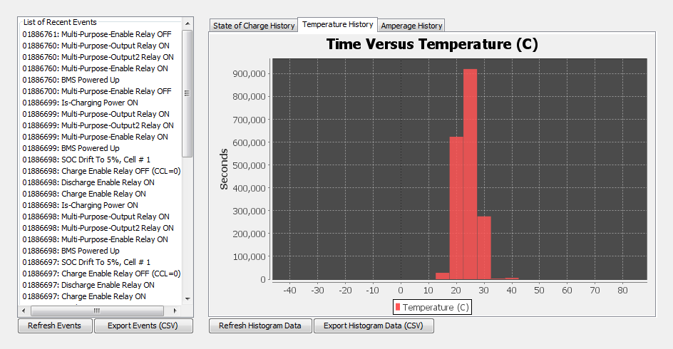

This screen provides access to historical logged data stored within the BMS in long term memory. It also provides access to a short recent events log which can be helpful for diagnosing issues or viewing the short-term history of the installation.
Sub-sections:
| < Live CANBUS Traffic | Recent Events > |